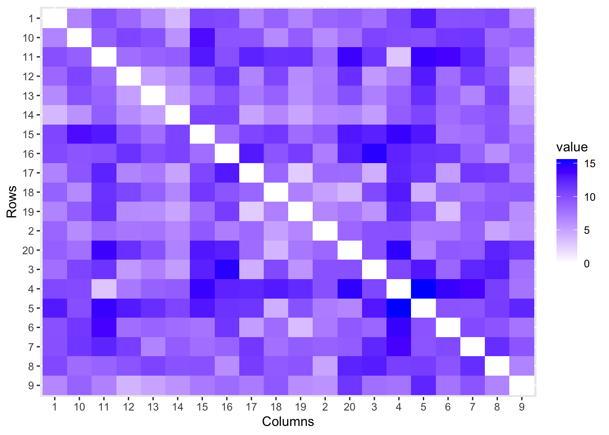

library(ggplot2)
library(gridExtra)
library(FactoMineR)
library(factoextra)
library(reshape2)
library(ggrepel)
library(ggfortify)
library(corrplot)TP5 - Multidimensional Scaling
Exercice 1 : Données simulées
Dans cet exercice, on va partir d’un jeu de données simulé afin de comprendre le cours sur le Multidimensional Scaling (MDS). On simule un échantillon \(\mathbf Y = (Y_1,\ldots,Y_n)\) avec \(Y_i\in\mathbb R^5\) et \(n=20\). On calcule la distance euclidienne usuelle entre chaque pair d’individus à l’aide de la fonction dist(). La matrice \(\mathcal D\) obtenue est visualisée à l’aide de la fonction autoplot() de la librairie ggfortify.
set.seed(1111)
Y<-matrix(round(runif(20*5,min=-5,max=5),0),ncol=5)
n<-nrow(Y)
D<-dist(Y)
autoplot(D)
On souhaite faire une MDS à partir de la matrice de distance \(\mathcal D=(d_{ij})\).
Question 1: Programmez les matrices \(A = (-\frac 1 2 d_{ij}^2)\), \(H=I_n - \frac 1 n \mathbb{1}_n \mathbb{1}^\top\) et \(B=H A H^\top\).
A<- ...
H<- ...
B<- ...Question 2: Faites la décomposition spectrale de \(B\). Que pouvez-vous dire des valeurs propres ? Tracez les valeurs propres décroissantes.
# A COMPLETERQuestion 3: Déduisez-en les coordonnées principales \(X=\{x_1,\ldots,x_n\}\) et tracez les individus dans l’espace euclidien retenu.
X<- ...
# A COMPLETERQuestion 4: A l’aide de la fonction cmdscale(), faites une MDS sur \(\mathcal D\) et comparez avec les résultats des questions précédentes.
res<-cmdscale(.....)
# A COMPLETERQuestion 5: On s’intéresse au lien entre MDS et PCA. Faites une PCA sur le jeu de données \(Y\). Retrouvez le lien entre les coordonnées principales de la MDS et les composantes principales de l’ACP.
resPCA<-PCA(....)
# A COMPLETERExercice 2 : jeu de données des villes
Pour cet exercice, nous travaillerons sur les données mdsville.csv. Elles se présentent sous la forme d’une matrice symétrique triangulaire contenant les distances kilométriques routières de 47 villes françaises.
Question 1: Lisez le fichier de données mdsvilles.csv et transformez en matrice de distance avec la fonction as.dist(). Visualisez la matrice de distance.
mdsvilles <- read.csv(.....)
d<-as.dist(mdsville,diag=TRUE)Question 2: A l’aide de la fonction cmdscale(), faites une MDS sur la matrice distance \(\mathcal D\).
mds <- cmdscale(...)Question 3: Etudiez le pourcentage d’inertie et d’inertie cumulée en fonction de la dimension \(r\). Combien de coordonnées principales retenez-vous ?
# A COMPLETERQuestion 4: Visualisez graphiquement les coordonnées des villes. Commentez. Transposez le graphique pour plus de concordance géographique.
autoplot(mds, label=T,label.size=4,xlab="",ylab="")
df<-data.frame(x=....,y=....,Name=rownames(mds$points))
ggplot(df, aes(x= x, y = y)) +
geom_point() #color = "blue", size = 3)+
geom_label_repel(aes(label = Name),
box.padding = 0.35,
point.padding = 0.5,
segment.color = 'grey50') +
theme_classic()Question 6: Comparez la distance restituée avec la matrice de distance initiale (via le diagramme de Shepard).
Dhat<- ...
df<-data.frame(d=as.vector(as.matrix(d)),
dhat=as.vector(as.matrix(Dhat)))
ggplot(df,aes(x=d,y=dhat))+
geom_point()+
geom_line(aes(x=d,y=d),col="blue")Question 7: Pour dépasser le problème des valeurs propres négatives de la matrice \(B\), une autre possibilité consiste à ajouter une constante positive \(c\) aux éléments hors diagonale principale. Elle doit être la plus petite possible pour éviter de détériorer l’information. Sa valeur peut être déterminée analytiquement. En adaptant les options de la fonction cmdscale(), mettez en place cette procédure. Que vaut la constante \(c\) optimisée ? Comparez les résultats avec ceux des questons précédentes.
mds.bis <-cmdscale(...)
# A completerExercice 3 : Données Spam
On s’intéresse ici à des données textuelles. George, ingénieur chez HP dans le département Computer Science a recueilli un échantillon de messages électroniques dans chacun desquels il a évalué le nombre d’occurrences d’une sélection de mots et caractères. Les variables considérées sont dans un premier temps des rapports (nombre d’occurrences d’un mot spécifique sur le nombre total de mots ou nombre d’occurrences d’un caractère sur le nombre de caractères du message) avant d’être transformées en indicatrices ou facteurs: présence / absence de mots ou ensemble de caractères. Il a également considéré trois variables prenant en compte la casse (majuscule / minuscule) des caractères et une dernière qualitative binaire indiquant le classement qu’il a fait de chaque message : spam ou pas. Ces données sont publiques, elles servent régulièrement de benchmark pour la comparaison de méthodes d’apprentissage machine: jeu de données spam issu du site de l’UCI Machine Learning Repository.
Au final, les données se présentent sous la forme d’un tableau contenant \(p=57\) mots observés dans \(n=4601\) messages dont \(1813\) sont des spams.
Question 1: Importez les données à l’aide des commandes suivantes. Faites quelques statistiques descriptives. Quelle est la principale caractéristique des variables étudiées ?
# lecture de la table de données
spam=read.table("spam.dat",header=TRUE)
spam[,1]=as.factor(spam[,1])
dim(spam)
summary(spam)Question 2: On propose de logtransformer les données. Vérifiez l’impacte de cette normalisation
Lspam<-data.frame("spam"=spam[,1],log(1+spam[,2:58]))
# A COMPLETERQuestion 3: Faites une ACP des données transformées et commentez.
resPCA<-PCA(...)
# A COMPLETERQuestion 4: On cherche à mieux comprendre les variables. On considère la dissimilarité suivante entre deux variables \(X^{(i)}\) et \(X^{(j)}\) basée sur la corrélation. Faites une représentation par positionnement multidimensionnel (MDS) des variables.
\[ d_{ij} = \sqrt{2(1- \mbox{cor}(X^{(i)},X^{(j)})^2)} \]
# A COMPLETER